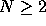
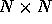
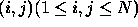
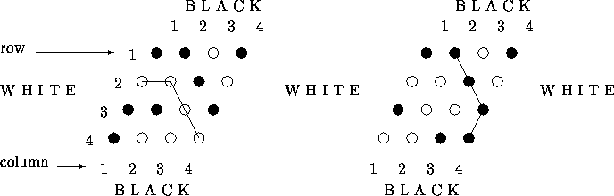

| Il Gioco dell'X |
The game `Il Gioco dell' X' is played on a N by N board (  ). The object of both players, say Black and White, is to join opposite sides of the board by placing in turn their pawns on the board in such a way that a path is made from one side to the other by adjacent (neighboring) pawns of their own color. Although the board is  it is not a square but rather diamond-shaped. Let us denote the field on the board in row i and column j by  . The neighbors of (i, j) are:
( i-1 , j-1 ) , ( i-1 , j )
( i , j-1 ) , ( i , j+1 )
( i+1 , j ) , ( i+l , j+1 )
provided these fields do not fall outside the board.
Black tries to join row 1 with row N, while White tries to join column 1 with column N.
lt is a Deep Mathematical Result that this game cannot end in a draw (that is, without winner). As we will present to you only full boards, there will always be a winner. It may, however, be difficult to see who has won, so some computer assistance would be appreciated.
Example 1 Example 2

In example 1 White has won, and in example 2 Black has won.
The input is a textfile containing a number of games. Each game is given by: one line containing an integer N, being the number of rows. (N can he any number between 2 and 200). This line is followed by N lines, each consisting of a row of N characters from the set {`b',`w'} denoting the pawns of Black and White respectively. The numbers of black and white pawns will differ by at most one. Note that all positions on the board are filled with pawns. The list of games ends with a single zero on a line of its own. (Of course, this is not a game for which a winner has to be determined.)
The output will be a textfile containing one line for each game. This line should contain the number of the game (starting at 1) followed by a space, and followed by an uppercase `B' if Black did win, or followed by an uppercase `W' if White did win.
4 bbwb wwbw bbwb bwww 4 bbwb wwbw bwwb wwbb 0
1 W 2 B